Texte, Zeug und Ideen von Christopher Reinbothe
Seit Jahrhunderten suchen die Menschen nach einem Zugang zur siebenten Dimension. Propheten sprachen von ihr als dem Paradies. Kriege wurden geführt, um ihre Geheimnisse an sich zu reißen. Festungen gebaut, um sie zu bewahren. Wissenschaftler forschten in allen Disziplinen, Archäologen gruben auf allen Kontinenten, doch nur den Waghalsigsten gelang es sich Zugang zu verschaffen. Sie alle kehrten nie wieder zurück.
Begleiten Sie mich auf meiner Suche nach der siebenten Dimension, die genau hier beginnt — auf phneutral.net!
Curriculum Vitae
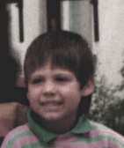
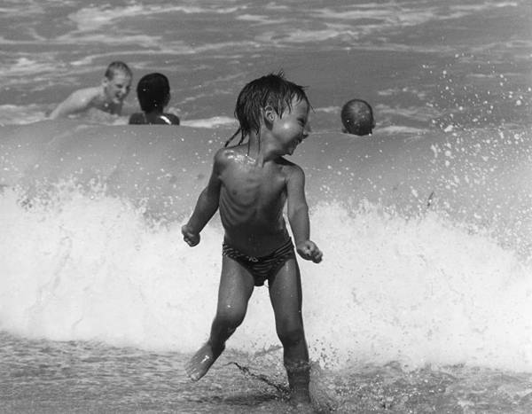
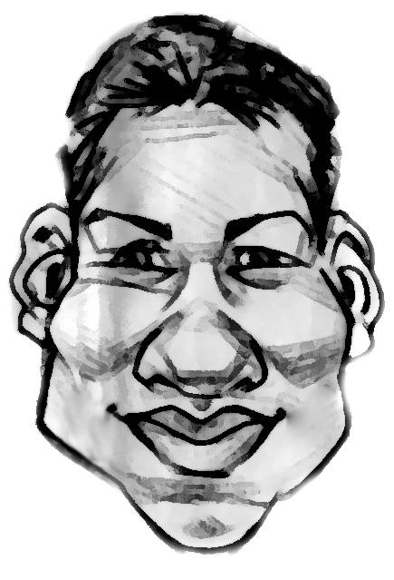
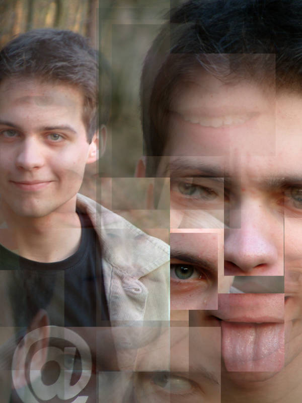
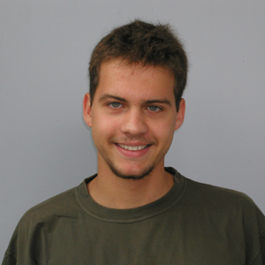
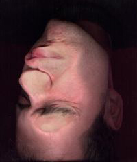
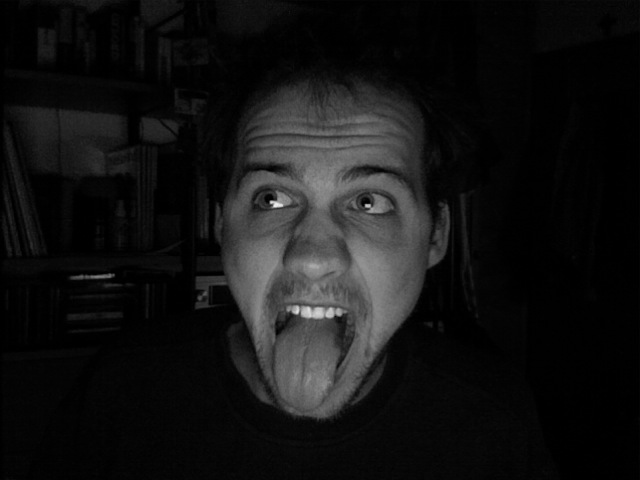
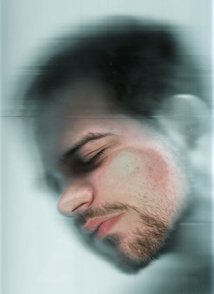
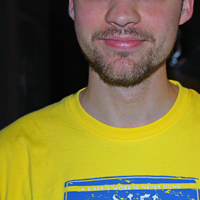
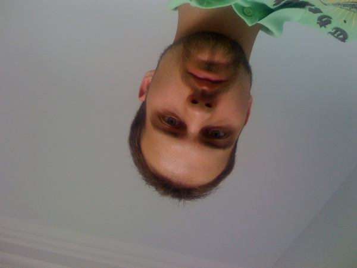
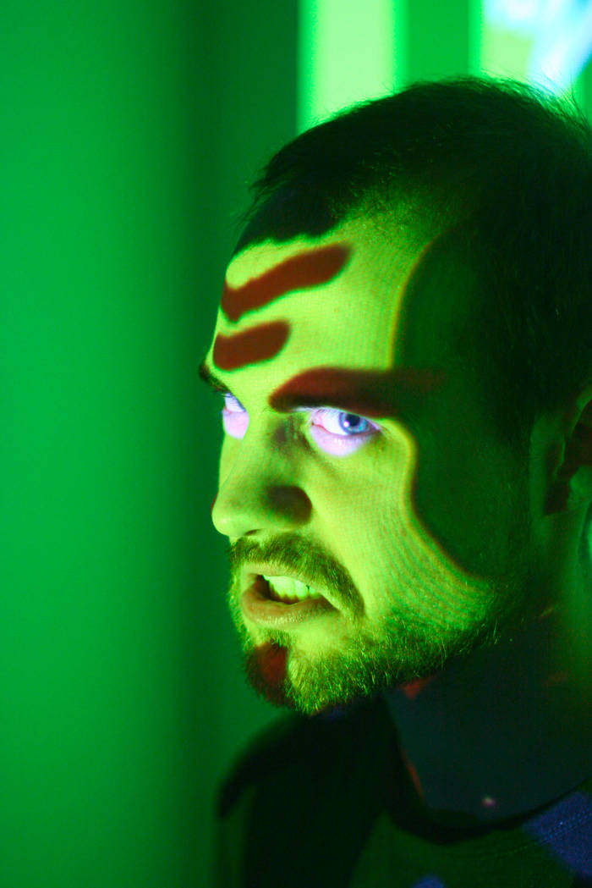
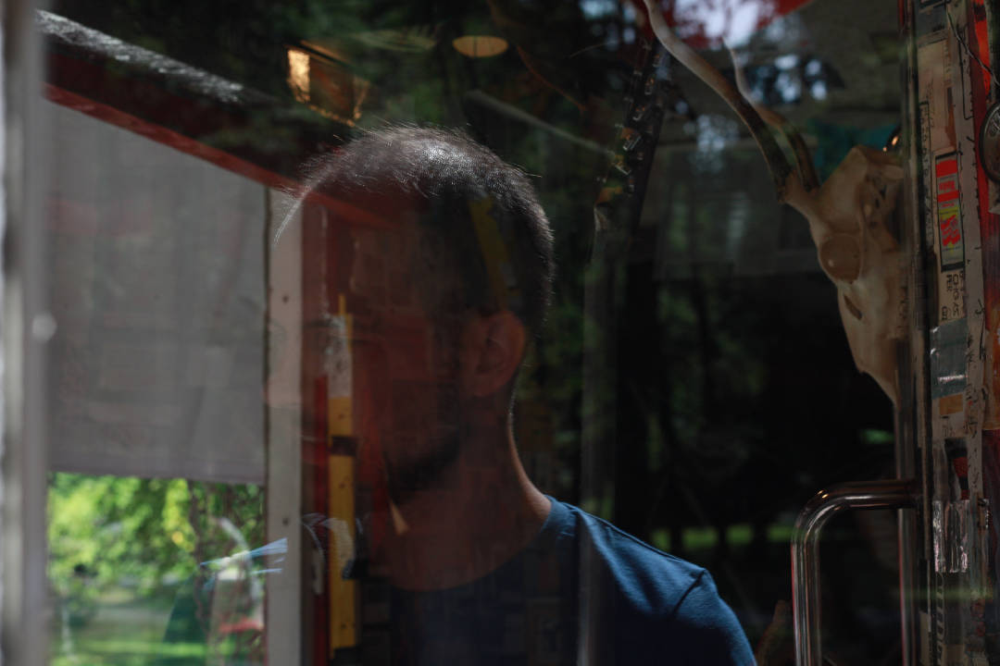
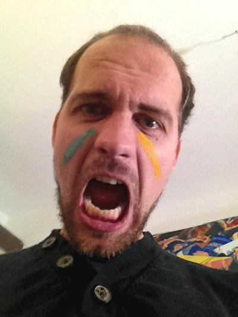
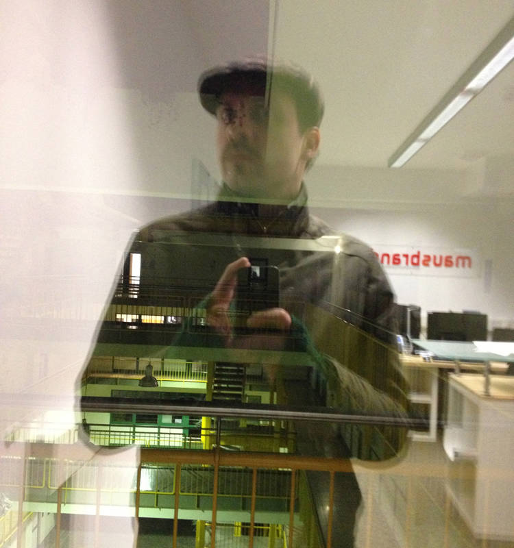
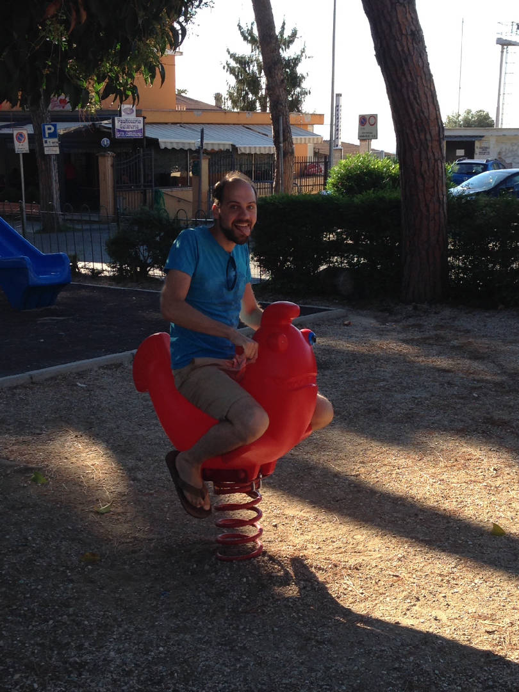
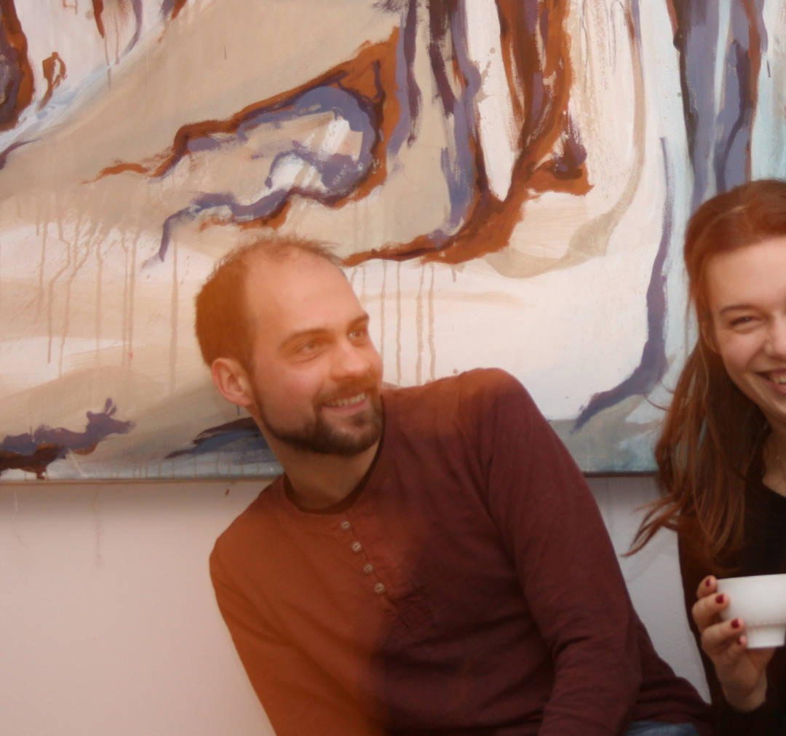
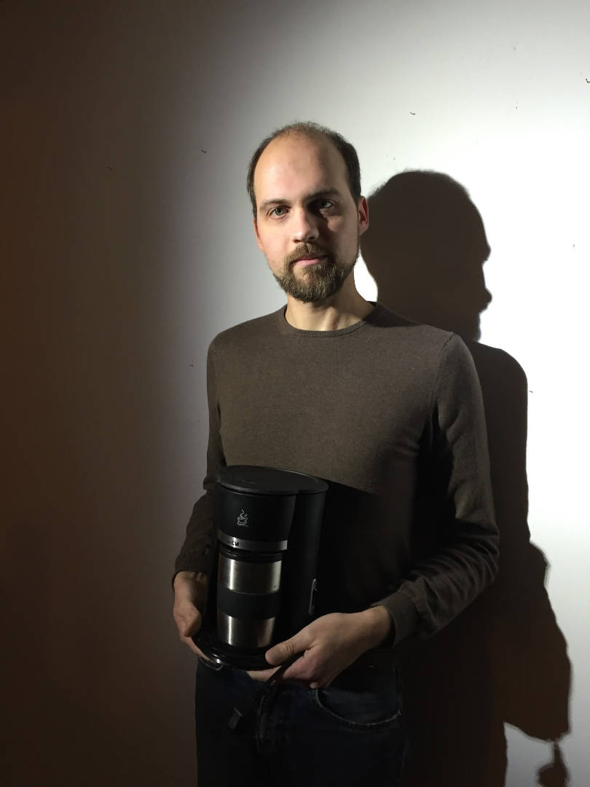
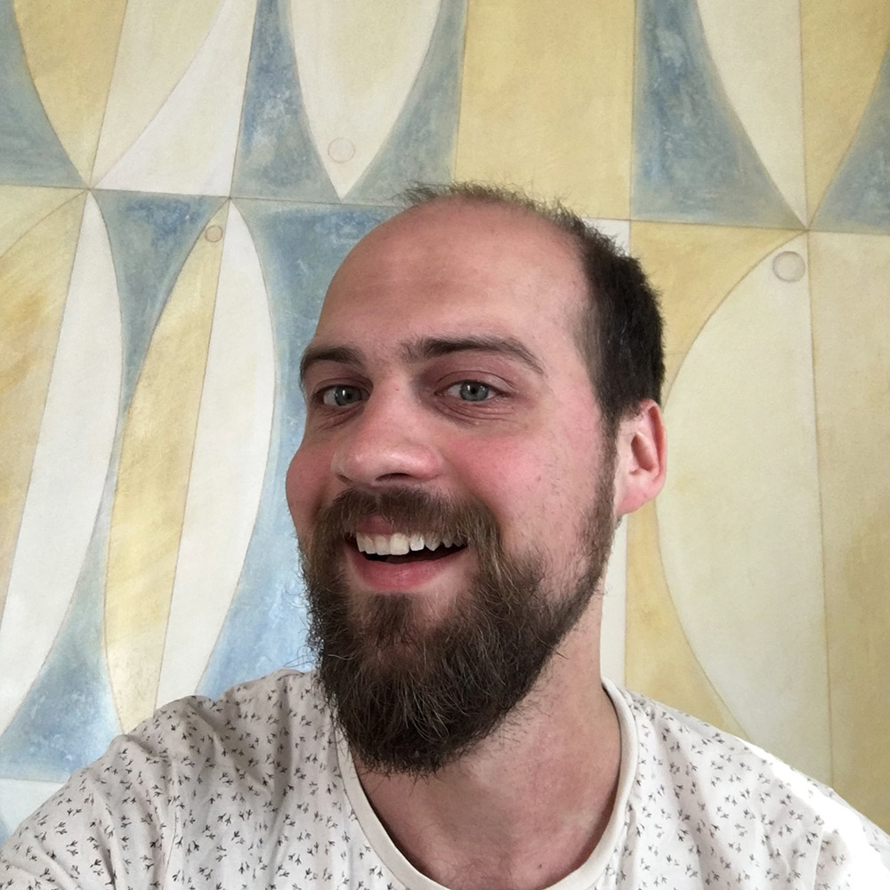
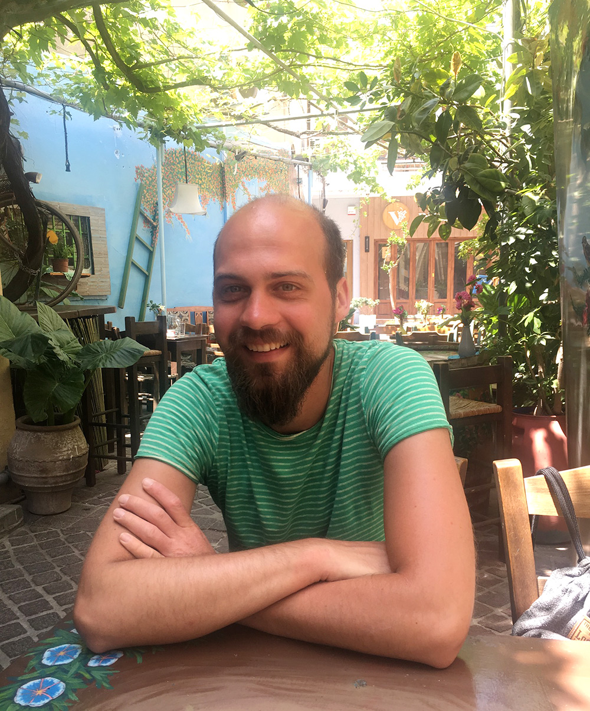
phneutral?
1984 geboren und das Buch gelesen. Fand in der Dusche ph-neutrales Shampoo und diesen Namen. Reiste 2001 nach Prag, erfuhr dort von Boris Teskow. Erhielt deshalb 2003 das Abitur. Lernte fürs Leben in Zivildienst und Studium.
Im Moment Graphikdesignlaborant und Internetarchivar — wahrscheinlich Zeitreisender. Erfahren Sie auf den folgenden Seiten weitere Details über die zahllosen Expertisen: